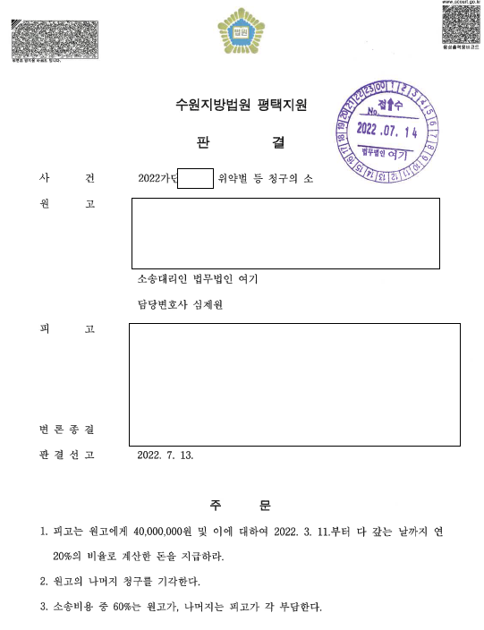

01사건 개요
가맹점주가 의무를 위반해 가맹본부가 2개월간 2회 시정통지를 했는데도 같은 위반을 반복해 즉시 해지된 뒤, 같은 장소에서 같은 업종을 운영한 사건입니다. 계약 종료 후 1년간 경업금지 약정이 있었습니다.
02쟁점
- 적법한 해지 절차를 거쳤는지
- 위약벌 금액이 과다한지
03변호사가 한 일
- 가맹사업법에 따른 시정통지와 해지 절차를 거친 점을 입증했습니다.
- 해지 후 경업금지 위반을 근거로 위약벌을 청구했습니다.
04결과
위반 사실은 인정됐지만 법원이 위약벌이 과다하다며 상당 부분을 감액해 일부 승소했습니다.

이 사례는 원문을 요약해 정리한 것입니다. 사건 경과와 판결문 등 전체 내용은 로톡에 게시된 원문에서 볼 수 있습니다.
로톡에서 전문 보기 →05비슷한 상황이라면
적법한 해지 절차를 지켜야 경업금지와 위약벌을 주장할 수 있습니다.
가맹본부가 다른 지점 매출을 부풀려 설명했다면 가맹금을 돌려받을 수 있나요?
가맹사업법상 허위·과장 정보제공에 해당하면 가맹금 반환을 요구할 수 있습니다. 가맹거래사 겸 변호사 명의 내용증명과 계약해지 합의 대행으로 10일 만에 가맹금을 반환받은 사례가 있습니다.
정보공개서를 받지 못하고 가맹계약을 했습니다. 가맹금을 돌려받을 수 있나요?
가맹본부는 계약 체결 14일 전까지 정보공개서를 제공해야 합니다. 정보공개서를 받지 못했거나 14일이 지나기 전에 계약했다면 계약일부터 4개월 이내에 가맹금 반환을 요구할 수 있습니다. 기간이 짧으니 바로 내용증명으로 통보하는 것이 좋습니다.
가맹계약 기간을 못 채우고 그만두면 위약금을 꼭 내야 하나요?
잔여 계약기간을 고려하지 않고 일률적으로 정한 과중한 위약금은 가맹사업법상 불공정거래행위로 무효가 될 수 있습니다. 법원도 잔여 계약기간을 기준으로 위약금을 산정하는 것이 타당하다고 판단한 바 있습니다(서울중앙지방법원 2023. 4. 27. 선고 2021가단5331897). 다만 본사가 지원한 인테리어·집기에 대한 위약금은 인정된 사례가 있어 계약서를 구체적으로 봐야 합니다.
평일 09:00–18:00 변호사가 직접 전화를 받습니다.
재판으로 자리에 없는 경우 로톡으로 상담을 신청하시거나 이메일로 문의해 주세요.
의뢰인이 특정되지 않도록 사실관계를 일부 줄이거나 바꾸어 정리했습니다. 사건의 결과는 구체적인 사실관계와 증거에 따라 달라질 수 있으며, 같은 결과를 보장하지 않습니다.